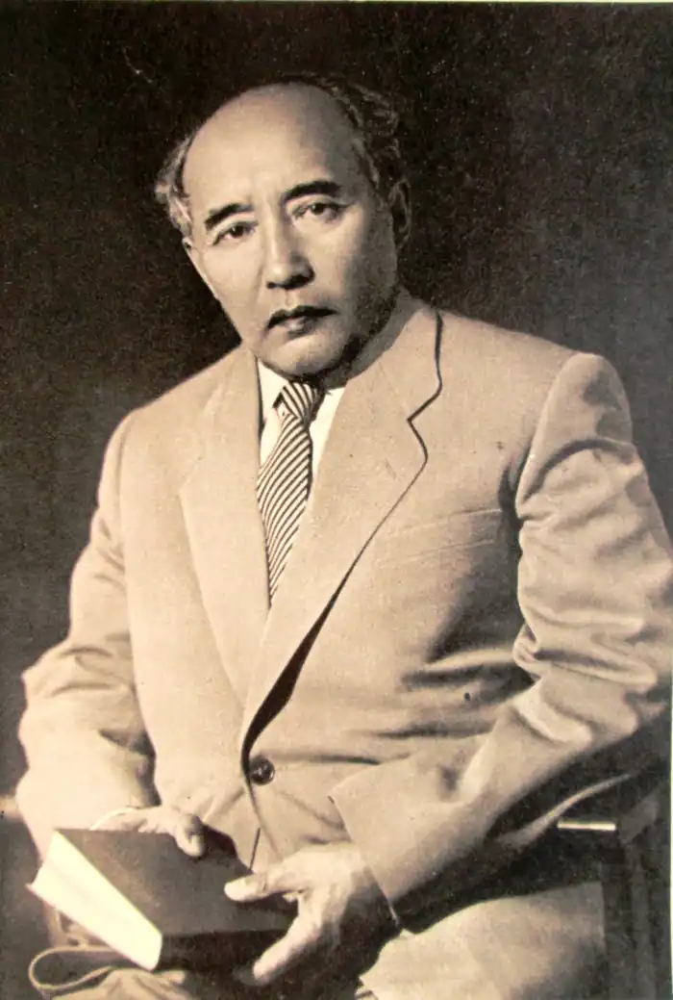

28 вересня 1897 Чінгізская волость, Семейскіх повіт, Семипалатинська область, Російська Імперія — 27 червень 1961 Москва, РРФСР, СРСР.
Видатний казахський письменник, драматург і вчений. Академік АН Казахської РСР (1946), голова Спілки письменників Казахстану.
Сім'я Ауезова перебувала у родинних стосунках з родиною Абая Кунанбаева, дід Мухтара Ауезов був другом і шанувальником творчості Абая. Освіта Мухтар Ауезов отримав в російській школі, учительській семінарії, на філологічному факультеті Ленінградського (Санкт-Петербурзького) університету, в аспірантурі Середньоазіатського університету. На початку революції Мухтар Ауезов займав пост відповідального секретаря ЦВК Киргизької республіки, під час колчаковщіни брав активну участь в боротьбі з Кличком в Семипалатинской області. Видатним твором радянської літератури є роман-епопея Ауезова "Шлях Абая" про життя великого поета-просвітителя Абая Кунанбаева. У романі показана складна картина життя казахського суспільства другої половини XIX століття. У літературі Казахстану Мухтар Ауезов як драматург займає почесне місце. Першим і найбільш раннім твором Ауезова була п'єса "Енлік-Кебек", заснована на народному переказі про трагічну долю двох молодих людей Сюжет аналогічний історії про ворожнечу сімей Монтеккі і Капулетті в п'єсі Шекспіра "Ромео і Джульєтта". П'єса "Енлік-Кебек" вперше була поставлена в юрті дружини Абая Айгер і з тих пір не сходить з казахської сцени. Його драма "Кара-Коз", з дивовижною чуйністю та історичної правдивістю відновила національні і побутові особливості народних співаків Казахстану, отримала першу премію на конкурсі драматургів в 1926 році в Кзил-Орді. Особливе місце займає також його драма "Байбач-струму" (Дружини-суперниці). Мухтар Ауезов написав розповіді: "Доля беззахисних" (1921), "Хто винен?" (1923), "Одруження" (1923), "Освічена громадянин" (1923), "Красуня в траурі" (1925), повість "Постріл на перевалі "(1927) та інші. Йому належить понад 20 п'єс, в тому числі: "Айман-Шолпан" (1934), "Абай" (постановка 1940 спільно з Л.С. Соболєвим), "Каракоз" (1926), "Кара кипчак Кобланди" (1943— 1944), "Зірниця" (1934), "На кордоні" (1937), "О першій годині випробувань" (1942) та інші. З групою радянських письменників в 1960 році відвідав США. Після повернення працює над циклами нарисів "Американські враження" і над новим романом "Плем'я молоде". Влітку 1961 року аж до Москви на лікування, але вмирає під час операції.